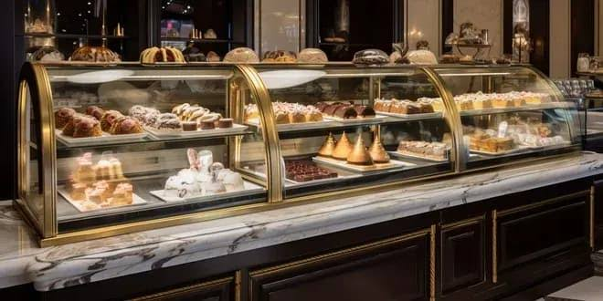

Pâtisserie fine tunisienn depuis 1900

Un monde magique de gâteries du quotidien et de petits plaisirs de la bouche. Nous proposons une gamme variée de mignardises, pâtisseries traditionnelles, chocolats, macarons sucrés et salés, brochettes et verrines.
gâteaux, morceaux, bouchées sucrées, glaces
à partir de 4 DT
bouchées froides, brochettes, verrines froides
pains, viennoiseries
confitures, miels, granola